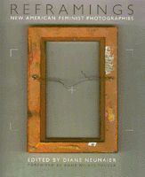

<body bgcolor="#FFFFFF" text="#000000" link="#0000FF" vlink="#CC0000" alink="#CC0000"><center><hr width="350" size="1" align="center" noshade>A remarkable collection of feminist art-works and critical essays exposes the diverse cultural representations of women<hr width="350" size="1" align="center" noshade><p><a href="https://cdcshoppingcart.uchicago.edu/Cart/ChicagoBook.aspx?ISBN=9781566393317&&PRESS=temple" target="_top">Buy this book!</a> | <a href="https://cdcshoppingcart.uchicago.edu/Cart/Cart.aspx?PRESS=temple" target="_top">View Cart</a> | <a href="https://cdcshoppingcart.uchicago.edu/Cart/Cart.aspx?PRESS=temple" target="_top">Check Out</a></p><p></p></center><!--none//--><h1>Reframings</h1>
<H2>New American Feminist Photographies</H2>
<H2><!-- Foreword by Tucker, Anne Wilkes --></H2>
<h3>edited by Diane Neumaier, foreword by Anne Wilkes Tucker</h3>
<P>cloth 1-56639-331-0 $69.50, Apr 96, <FONT COLOR=#990033>Out of Stock Unavailable</FONT>
<br>paper 1-56639-332-9 $36.95, <FONT COLOR=#990033>Out of Stock Unavailable</FONT>
<BR> 336 pp
8.5x10
162&nbsp;halftones 13&nbsp;duotones 84&nbsp;color&nbsp;illustrations
</P><BLOCKQUOTE><I>"</I>Reframings<I> makes a tremendous contribution to the field of photography, art, and feminist theory. There is a definite need to reflect on the representation of women through the eyes of feminist artists and critics and probe issues in new and provocative ways-this book does just that. The multiple perspectives and voices of these women ensure an incredibly rich and diverse analysis of what is 'American' and what is 'feminism.'"</I>
<br>&#151<b>Constance Wolf</b>, Associate Director, Whitney Museum of American Art<I></I></BLOCKQUOTE>
<P>This diverse and compelling collection of contemporary feminist visual art is now available in a paperback edition.
<p><I>Reframings</I> makes visible what has been for too long nearly invisible: contemporary feminist visual art that represents a remarkable range of perspectives, styles, and subject matter. The forty-five women who created these works-artists and writers such as Deborah Willis, Carrie Mae Weems, Nan Goldin, and Carm Little Turtle-are connected by a belief that images are political and that today's feminist concerns cannot be separated from such issues as ethnicity, class, age, and sexuality. They share a consciousness that historically women have been "framed" and can now be "reframed."
<BR>&nbsp;<h2>Excerpt</h2><P>Excerpt available at <a href="http://www.temple.edu/tempress">www.temple.edu/tempress</a></p>
<BR>&nbsp;<h2>Reviews</h2>
<p><I>"This path breaking book unmasks a key artist movement long neglected by the photography establishment: the canonbusting contribution of feminist photographers over the past decade. Besides providing a comprehensive look at the seldom seen work of over 30 artists, this volume constitutes a major intervention into the discourse of photography criticism. Diane Neumaier and her stellar cast of critics and artists supply the missing pieces in the puzzle of postmodernism."</I>
<br>&#151<b>Brian Wallis</b>, contributing editor, <i>Art in America</I>
<p><I>"This is an ambitious, exceptional book in its scope, breadth, and inclusiveness.... Neumaier does not shy away from the difficult questions that conflicting interpretations present. Instead she embraces a diversity of opinion and, at times, conflicting points of view to explore a wide range of American feminist issues and experiences."</I>
<br>&#151<b><I>Choice</I></b>
<p><I>"Providing visibility to feminist photographers and theorists, and emphasizing the interrelation of the two, </I>Reframings<I> expands the parameters of feminist discourse, while at the same time collecting a canon to which scholars might refer in the future."</I>
<br>&#151<b><I>afterimage</I></b>
<BR>&nbsp;<h2>Contents</h2><P>
<p>Foreword &#150 Anne Wilkes Tucker
<br>Acknowledgments &#150 Diane Neumaier
<br>Introduction &#150 Diane Neumaier
<p><b>Part I: Gendering Space</b>
<br><b><I>Artworks</I></b>
<br>1. <I>Recent Public Works</I> &#150 Barbara Kruger
<br>2. from <I>The family Tapes</I> &#150 Marilyn Nance
<br>3. from <I>WWII American and Soviet Women Pilots</I> &#150 Anne Noggle
<br>4. from <I>Making the Most of Your Backyard: The Story Behind an Ideal Beauty</I> &#150 Kaucyila Brooke
<br>5. <I>Voyeurism and Its Discontents</I> &#150 Sherry Millner
<br>6. <I>Is This How I Look?</I> &#150 Carol Simon Rosenblatt
<br><b><I>Essay</I></b>
<br>7. Undertones: Ten Cultural Landscapes &#150 Lucy R. Lippard
<p><b>Part II: Domestic Production / Reproduction / Resistance</b>
<br><b><I>Artworks</I></b>
<br>8. from <I>between the birthdays</I> &#150 Linda Brooks
<br>9. from <I>Live and Let Die</I> &#150 Gail S. Rebhan
<br>10. from <I>Reframing the Past</I> &#150 Nancy Barton
<br>11. from <I>Archiving Abuse</I> &#150 Clarissa Sligh
<br>12. from <I>It's All There in Black and White</I> &#150 Susan Meiselas
<br>13. from <I>African American Spirit</I> &#150 S. A. Bachman
<br><b><I>Essay</I></b>
<br>14. Women's Stories/Women's Photobiographies &#150 Deborah Willis
<p><b>Part III: Identity Formations</b>
<br><b><I>Artworks</I></b>
<br>15. from <I>Valley Girls: The Construction of Feminine Identity in Consumer Culture</I> &#150 Sarah Hart
<br>16. from <I>A Legacy of Restraint</I> &#150 Leigh Kane
<br>17. from <I>Decide Who You Are</I> &#150 Adrian Piper
<br>18. <I>Three Works</I> &#150 Lorna Simpson
<br>19. <I>Hard Glance: Asian American Image and Identity</I> &#150 Diane Tani
<br><b><I>Essay</I></b>
<br>20. As in Her Vision: Native American Women Photographers &#150 Theresa Harlan
<p><b>Part IV: Postcolonial Legacies</b>
<br><b><I>Artworks</I></b>
<br>21. from <I>Bringing the War Home: House Beautiful</I> &#150 Martha Rosler
<br>22. Type/Cast: (not the typical) portrait of a revolutionary &#150 Esther Parada
<br>23. DeColonization &#150 Yong Soon Min
<br>24. from <I>Native Programming</I> &#150 HuIleah Tsinhnahjinnie
<br>25. <I>Two lnstallations</I> &#150 Pat Ward Williams
<br><b><I>Essay</I></b>
<br>26. ODELLA/Carlota &#150 Julia Ballerini
<p><b>Part V: Rationalizing and Realizing the Body</b>
<br><b><I>Artworks</I></b>
<br>27. <I>Untitled Pinhole Photographs</I> &#150 Martha Casanave
<br>28. from <I>Claiming the Gaze</I> &#150 Linn Underhill
<br>29. from <I>The Global Face of AIDS: Photographs of Women</I> &#150 Ann Meredith
<br>30. from <I>Untitled Heads</I> &#150 Jin Lee
<br>31. from <I>How to Read Character</I> &#150 Carla Williams
<br>32. from <I>X-Rayed (Altered)</I> &#150 Dorit Cypis
<br><b><I>Essay</I></b>
<br>33. A Meditation on Bearing/Baring the Body &#150 Moira Roth
<p><b>Part VI: Sex and Anxiety</b>
<br><b><I>Artworks</I></b>
<br>34. from <I>The DeSublimation of Romance</I> &#150 Connie Hatch
<br>35. <I>Untitled</I> from <I>Kitchen Table Series</I> &#150 Carrie Mae Weems
<br>36. from <I>Tremors from the Faultline</I> &#150 Tamarra Kaida
<br>37. <I>Untitled</I> &#150 Cindy Sherman
<br>38. from <I>Dear Shirley</I> &#150 Hinda Schuman
<br>39. from <I>The Other Side</I> &#150 Nan Goldin
<br><b><I>Essay</I></b>
<br>40. This Is Not a Fairy Tale: A Middle-aged Female Pervert (White) in the Era of Multiculturalism &#150 Catherine Lord
<p><b>Part VII: Crossing Over: Reimagining and Reimaging</b>
<br><b><I>Artworks</I></b>
<br>41. from <I>Latina Lesbians</I> &#150 Laura Aguilar
<br>42. <I>Justice on TV,</I> from <I>A Guide to the Wasteland</I> &#150 Margaret Stratton
<br>43. from <I>Earthman Series</I> &#150 Carm Little Turtle
<br>44. from <I>Being and Having</I> &#150 Catherine Opie
<br>45. from <I>Aboutface</I> &#150 Coreen Simpson
<br><b><I>Essay</I></b>
<br>46. Turning the Tables: Three Asian American Artists &#150 Valerie Soe
<p><b>Part VIII: Rerepresenting Representation</b>
<br><b><I>Artworks</I></b>
<br>47. <I>Ancient History/Recent History</I> &#150 Ann Fessler
<br>48. from <I>Contemplation of the Journey Home</I> &#150 Betty Lee
<br>49. <I>The Management of Desire</I> &#150 Deborah Bright
<br>50. from <I>Metropolitan Tits</I> &#150 Diane Neumaier
<br>51. from <I>Theatres of Madness</I> &#150 Susan Jahoda
<br>52. from <I>Corpus</I> &#150 Mary Kelly
<br><b><I>Essay</I></b>
<br>53. Representing Women: The Politics of Self-Representation &#150 Abigail Solomon-Codeau
<p>Appendixes
<br>About the Photographic Images
<br>About the Artists
<br>About the Critics
<br>List of Essay Illustrations
</P><BR>&nbsp;<H2>About the Author(s)</H2>
<P><B>Diane Neumaier</B> is Associate Professor of Visual Arts at Mason Gross School of the Arts, Rutgers University.</P>
<BR><H2>Subject Categories</H2>
<p><A HREF="/tempress/art.html" TARGET="_top">Art and Photography</a>
<BR><A HREF="/tempress/women.html" TARGET="_top">Women's Studies</a>
</p>
<p align="center"><a href="https://cdcshoppingcart.uchicago.edu/Cart/ChicagoBook.aspx?ISBN=9781566393317&&PRESS=temple" target="_top">Buy this book!</a> | <a href="https://cdcshoppingcart.uchicago.edu/Cart/Cart.aspx?PRESS=temple" target="_top">View Cart</a> | <a href="https://cdcshoppingcart.uchicago.edu/Cart/Cart.aspx?PRESS=temple" target="_top">Check Out</a></p><p><font face="Arial" size="1"><a href="copyright.html" onMouseOver="window.status='Web Copyright Policy';return true;" onMouseOut="window.status=''" title="Web Copyright Policy">&copy;</a> 2015 <a href="http://www.temple.edu" target="new" onMouseOver="window.status='Link to Temple University home page';return true;" onMouseOut="window.status=''" title="Link to Temple University home page">Temple University</a>. All Rights Reserved. http://www.temple.edu/tempress/titles/1127_reg.html</font></p>